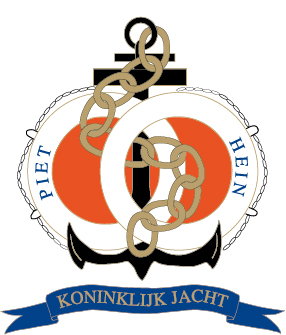

Koninklijk Jacht Piet Hein

Indien u belangstelling heeft voor de mogelijkheden van het koninklijk jacht of een reservering wilt doen kunt u tijdens kantooruren
contact opnemen met:
Secretariaat Piet Hein
Schiekade 77
3033 BE Rotterdam
Ligplaats Piet Hein
Eemhaven
3033 BE Rotterdam
Routebeschrijving naar de ligplaats
Vanaf de groene Kruisweg (N492) de Korperweg oprijden, na 0,6Km rechtdoor de Waalhaven Zuidzijde op, na 1,3Km rechtsaf de Waalhavenweg op,
na 1,5Km rechtdoor de Eemhavenweg op.
U kunt parkeren op het terrein van de Havendienst.
Een e-mail sturen kan ook: Info Piet Hein
Wij zullen uw vragen graag beantwoorden en heten u graag van harte welkom aan boord van de ‘Piet Hein’.
Op aanvraag zullen wij u de vaartochtinformatie en de algemene voorwaarden toesturen.